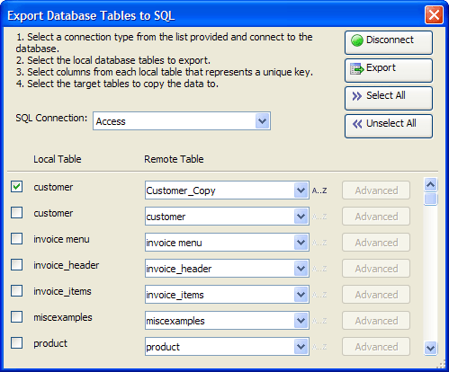

Export Database Tables to SQL Dialog
The Export Database Tables to SQL dialog helps you export one or more Alpha Anywhere .DBF tables to a back-end SQL database.

Procedure
Select a database type from the SQL Connection list.
Click Connect to display the Connect to Database dialog.
Navigate to and select a database in the File Name control.
Enter the other values required to access the database.
Click Test Connection.
Click OK if the connection succeeded.
Place a checkmark to the left of each table that you would like to export.
Enter the name of the new table or select the name of the table you would like to overwrite in the Remote Table control.
Optionally, for each remote table:
Click
 to display the Primary Key Columns
dialog.
to display the Primary Key Columns
dialog.select one or more fields from the Table Columns list and click
 to move them (in order) to the Primary
Key Columns list.
to move them (in order) to the Primary
Key Columns list.Click OK to continue.
Click Export.
Click
 to exit.
to exit.
Limitations
Desktop applications only.
See Also